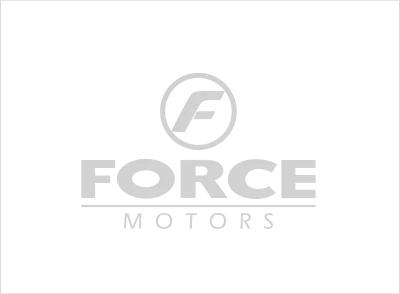
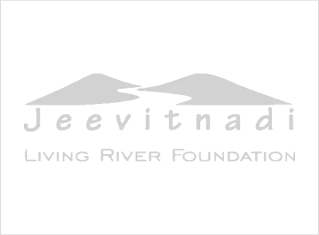
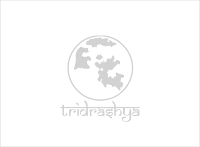
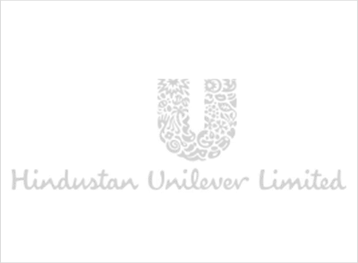
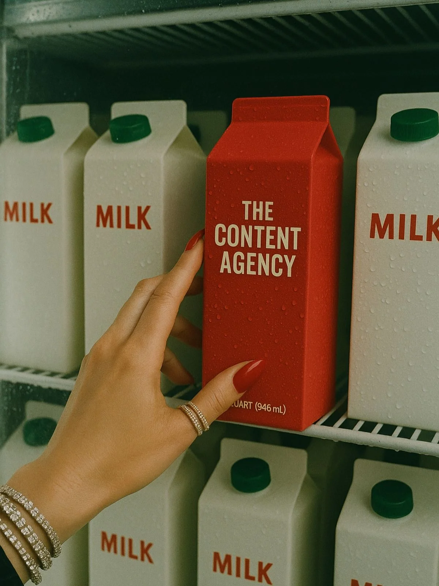
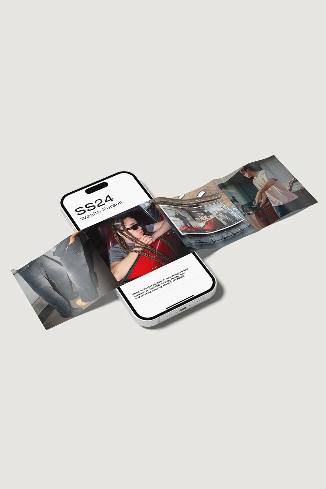

We make the content, run the creator campaigns, and build the websites that turn attention into customers — shipped on a weekly rhythm from our creative distribution studio in Pune.




Most agencies stop at the deliverable. We run the whole loop: making content, putting it in front of the right audiences, and building the pages that turn that attention into customers. All on one weekly rhythm.

We run your content end to end — strategy, monthly shoots, reels and static — published weekly so your brand never goes quiet.
See content work ->
We find the right creators, brief them, run the shoots and turn the coverage into ads — so you borrow trust instead of buying cold reach.
See creator work ->
Landing pages, full sites and lightweight tools, built fast — so the attention your content earns turns into leads and sales.
See web & tech ->
Big brand moments — concept, visual world, shoot and a plan to push it across every channel at once.
Start a campaign ->We go deep in a handful of categories where great content and the right creators move real numbers — not just likes.
Content and creator engines that move products, not just impressions.
Sell, don't shoutShoots, motion and retail-ready assets for brands that live on shelves and feeds.
Shelf to scrollWeekly content that fills tables and makes a place feel like somewhere to be.
Footfall firstProject films, walkthroughs and launch campaigns that sell space before it's built.
Sell the visionSites, explainer content and launch motion that make complex products easy to get.
Clarity that convertsAdmissions and brand content that earns the trust parents and students look for.
Trust at scaleA single campaign, site or brand film. Fixed scope, fixed timeline, no strings.
One-offA 3–6 month push to build the system and prove it works in market.
SprintAn ongoing monthly partnership. We become the team that ships your brand.
MonthlySeeTusk is run by three founders who each own a part of the engine — and stay close to every account.
Founder · Strategy & Brand
Figures out what your brand should say, and why anyone should care.
Co-founder · Web & Technology
Builds the sites, landers and tools that catch the attention we create.
Co-founder · Production & Ops
Turns the plan into shoots, edits and a calendar that actually ships.
We went from posting whenever we remembered to a feed that finally looks like the cafe we run. Walk-ins now mention our reels.
They covered our launch end to end. One week of creator edits did more than our last campaign did in a quarter.
The brand and the website finally feel like the same company. It looks like we're three times our size.
Tell us the stuck point: quiet content, underused creators, a launch coming up, or a site that doesn't carry the brand. We'll give you a straight read and a practical way to fix it.